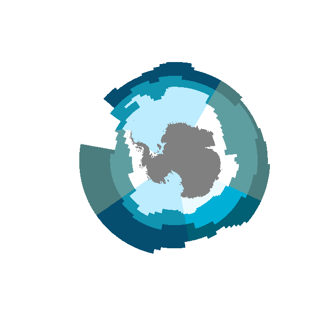
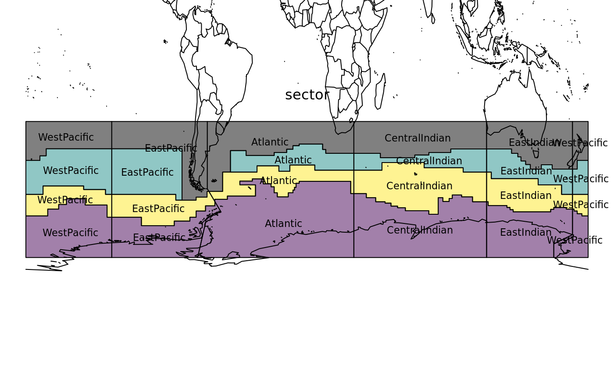

The goal of measoshapes is to provide regionalization boundaries for MEASO.
There are several in-built data sets currently at version 05. See below where each is explained.
Installation
To install measoshapes from Github use
## install.packages("remotes")
remotes::install_github("AustralianAntarcticDivision/measoshapes")Map
To map the regions with base plotting (with the sf package).
First join the names and properties to the geometry, we also group the features so that the seam at the anti-meridian is removed.
library(measoshapes)
library(dplyr)
library(sf)
measo <- measo_regions05 %>% group_by(name) %>% summarize() %>%
inner_join(measo_names)
#> Joining, by = "name"Now, plot the geometry with the offical colours and make sure no ‘reset’ so that we can add other layers.
plot(st_geometry(measo), col = measo$fill, reset = FALSE, border = NA)A very simple coastline data is added.
coast <- rnaturalearth::ne_countries(scale = "medium", returnclass = "sf") %>% dplyr::filter(sovereignt == "Antarctica")
coast <- st_transform(coast,
st_crs(measo))
plot(st_geometry(measo), col = measo$fill, reset = FALSE, border = NA)
plot(st_geometry(coast), col = "#808080", add = TRUE, border = NA)
Map with ggplot2
A ggplot2 example. To use the literal fill colours we need scale_fill_identity(), this is ggplot’s “straight-through” mechanism.
library(ggplot2)
ggplot(measo, aes(fill = fill)) + geom_sf(colour = NA) + scale_fill_identity() + geom_sf(data = coast, aes(fill = NULL))
Map with SOmap
The SOmap package provides some simpler ways of creating and adding to polar maps. Once a map is set up it knows what projection it is in, so we can forget about having to transform the data.
We can add arbitrary data at longitude/latitudes pairs and SOplot knows what to do.
## atm we need a special branch (2020-02-20)
#remotes::install_github("AustralianAntarcticDivision/SOmap@dev-0.6")
library(SOmap)
#> Loading required package: raster
#> Loading required package: sp
#>
#> Attaching package: 'raster'
#> The following object is masked from 'package:dplyr':
#>
#> select
SOmap(trim = -32) ## set up a polar map
## set overlay to half-transparent
SOplot(st_geometry(measo), border = NA, col = scales::alpha(measo$fill, 0.75)) ## no need to worry about the projection
#> Warning in if (class(x) == "character") {: the condition has length > 1 and only
#> the first element will be used
#> Warning in if (class(x) != "CRS") {: the condition has length > 1 and only the
#> first element will be used
#> Warning in SOproj(x = x, y = y, target = target, source = source, ...): assuming
#> generic data is in longitude,latitude
ll <- cbind(lon = c(147, 100, -10, -80),
lat = c(-42, -50, -70, -50))
SOplot(ll, pch = 1:4, col = viridis::viridis(4), cex = 3, lwd = 4)
#> Warning in SOproj(x = x, y = y, target = target, source = source, ...): assuming
#> generic data is in longitude,latitude
## other objects work too (sf, raster, sp)
SOplot(SOmap_data$fronts_park)
#> Warning in plot.sf(SObj, add = add, ...): ignoring all but the first attribute
SOplot(coast, col = "#808080")
#> Warning in plot.sf(SObj, add = add, ...): ignoring all but the first attribute
Data sets
There is no code in the measoshapes package, but the package records the creation of each shapes layer using standard R mechanisms.
There are five datasets, and for normal usage, calculating areas, and making maps we would use the first three. The _coastline forms have the continent of Antarctica cut out of the shapes.
-
measonamesa dataframe of thename,sector, andzone -
measo_regions05_ll_coastlinethe polygons with the continent of Antarctica cut out -
measo_regions05_coastlinethe polygons (in polar) with the continent of Antarctica cut out
Two other forms in polar and longitude/latitude form are use for model overlays (for technical reasons).
-
measo_regions05the polygons of each combination of sector and zone -
measo_regions05_llthe polygons in longitude/latitude form
To make a map with these we can use the following code
library(measoshapes)
plot(measo_regions05_ll_coastline, reset = FALSE)
maps::map(add = TRUE, col = "grey", fill = FALSE)
To export to shapefile:
st_write(measo_regions05_ll_coastline, "myfile.shp", driver = "SHP")Here we explore the names in more detail. The northern regions are assigned codes that include “T” for temperate, but they aren’t supposed to be part of MEASO. They share a sector but have no assigned zone. From colour_values on zone they get black.
par(mar = rep(0.2, 4))
plot(st_geometry(measo_regions05_ll), reset = FALSE,
col = colourvalues::colour_values(measo_names$sector, alpha = 0.5))
cds <- st_coordinates(st_centroid(measo_regions05_ll))
#> Warning in st_centroid.sfc(st_geometry(x), of_largest_polygon =
#> of_largest_polygon): st_centroid does not give correct centroids for longitude/
#> latitude data
text(cds, lab = measo_names$name, cex = 0.7)
par(xpd = NA)
text(0, -20, "name")
maps::map(add = TRUE)
par(xpd = TRUE)
plot(st_geometry(measo_regions05_ll), reset = FALSE,
col = colourvalues::colour_values(measo_names$zone, alpha = 0.5))
cds <- st_coordinates(st_centroid(measo_regions05_ll))
#> Warning in st_centroid.sfc(st_geometry(x), of_largest_polygon =
#> of_largest_polygon): st_centroid does not give correct centroids for longitude/
#> latitude data
text(cds, lab = measo_names$zone, cex = 0.7)
par(xpd = NA)
text(0, -20, "zone")
maps::map(add = TRUE)par(xpd = TRUE)
plot(st_geometry(measo_regions05_ll), reset = FALSE,
col = colourvalues::colour_values(measo_names$zone, alpha = 0.5))
cds <- st_coordinates(st_centroid(measo_regions05_ll))
#> Warning in st_centroid.sfc(st_geometry(x), of_largest_polygon =
#> of_largest_polygon): st_centroid does not give correct centroids for longitude/
#> latitude data
text(cds, lab = measo_names$sector, cex = 0.7)
par(xpd = NA)
text(0, -20, "sector")
maps::map(add = TRUE)
par(xpd = TRUE)Please note that the ‘measoshapes’ project is released with a Contributor Code of Conduct. By contributing to this project, you agree to abide by its terms.